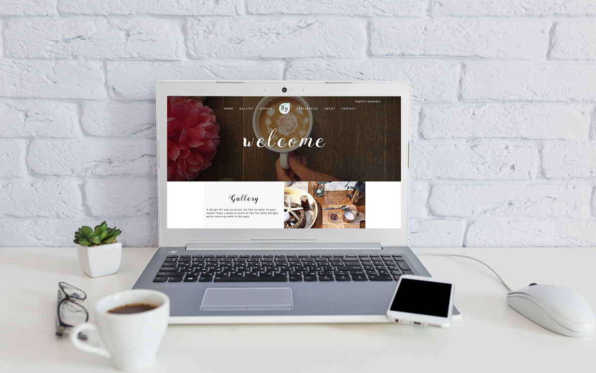
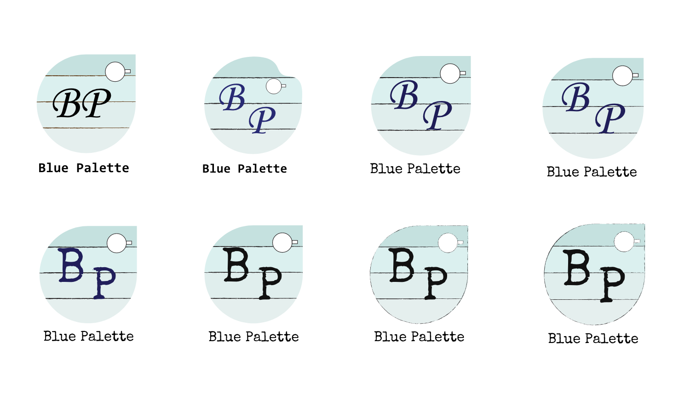
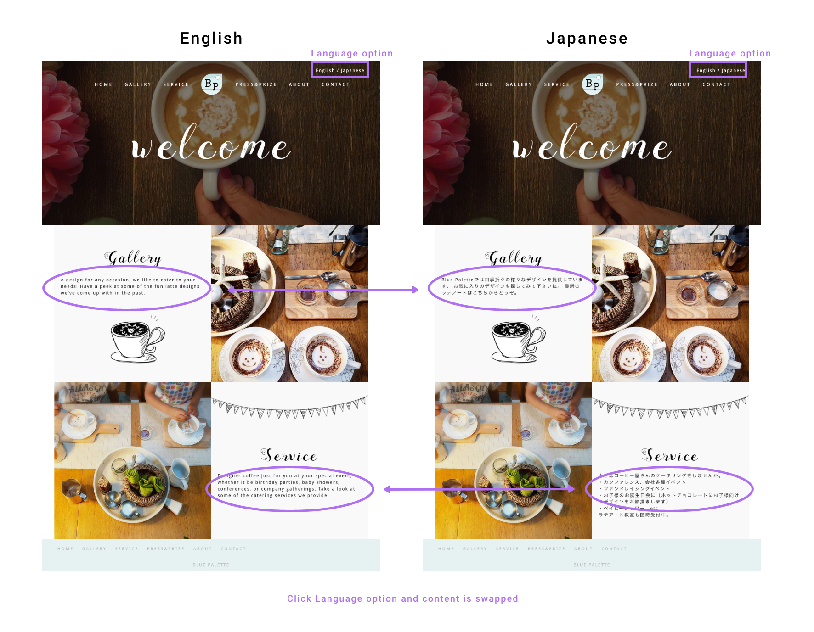

This is an award-winning latte artist, Aki Tokuhara’s website (and Blue Palette is her company). Aki makes latte art for commercial posters, TV and company events. She also holds a latte art workshop for adults and kids. My work was to create a logo, plus design and develop a website.
YEAR
2016
ROLE
UX/UI and Frontend Development
TOOLS
Photosohp, Illustrator, Sketch, HTML, CSS, JQuery, Javascript, PHP
The logo creation process is the starting point of a brand and gives the brand an identity. Aki has an idea for Blue Pallett’s logo, she made a logo draft. My part was to bring the draft into Illustrator and refine the logo: selecting the colors, typography and line textures.
This image is the initial draft from Aki. Her logo is a blue painter’s palette with the company’s initial, “BP” on it. The hole for holding the palette is in the shape of a coffee cup.
First, I redrew the logo based on Aki’s draft in Illustrator. I created a few versions of the logo and got feedback from Aki. Changing the “BP” font and the color to be more unified. In the end, the lines were changed to a pencil texture to give it more of a handcrafted feeling.
On Aki’s website, I did all of the research, design, and development. The website shows Aki’s professional work and her services for potential clients. In terms of the website design, I wanted to express a warm look and feel like Aki’s latte artwork. To express that I decided to use the handcrafted elements for the design. One is a calligraphy font on titles, and another is Aki’s latte artwork image on the landing page. In addition, we used a pencil texture Illustration that Aki created.
For the potential English and Japanese speaking customer (Aki is Japanese/English bilingual and has a connection to both communities), we made Japanese and English language options. In the Japanese page, title and navigation are kept in English. English title and navigation are widely used on the Japanese website and it is considered to be stylish.
